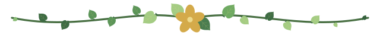
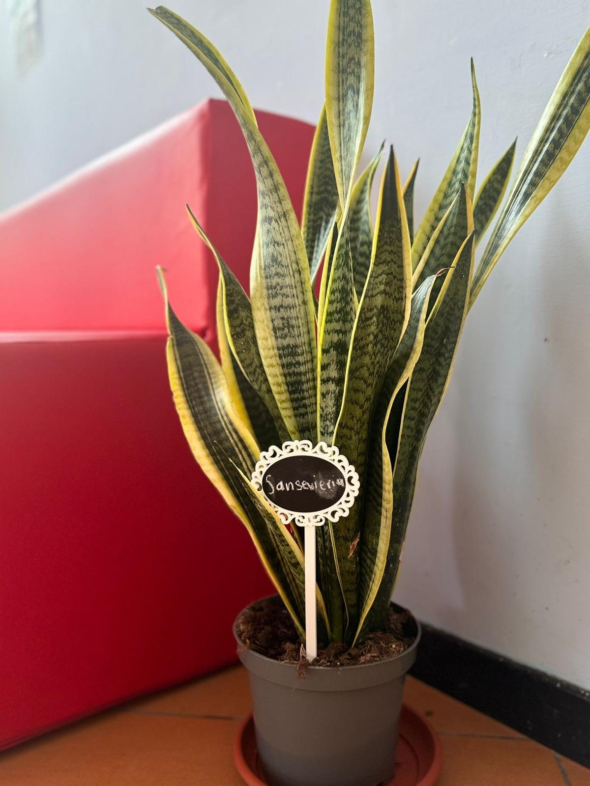
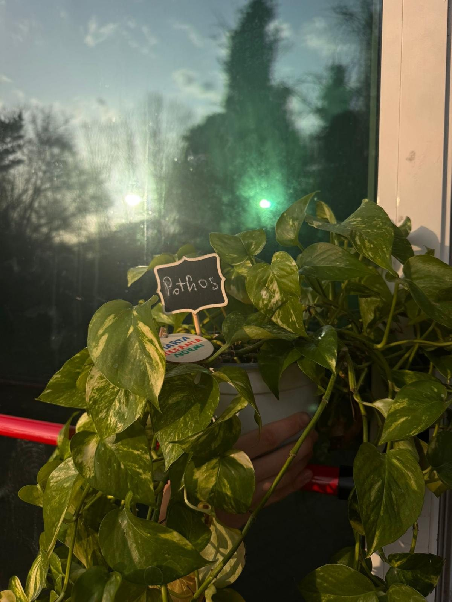
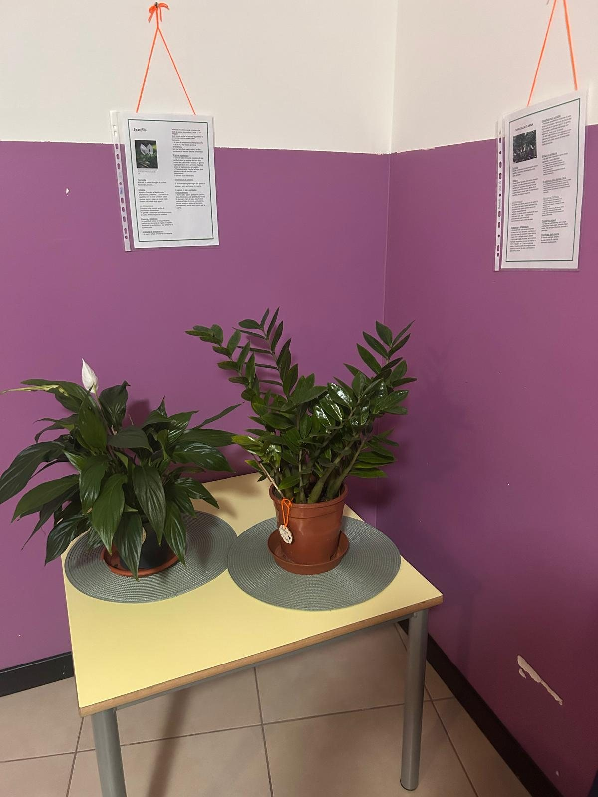
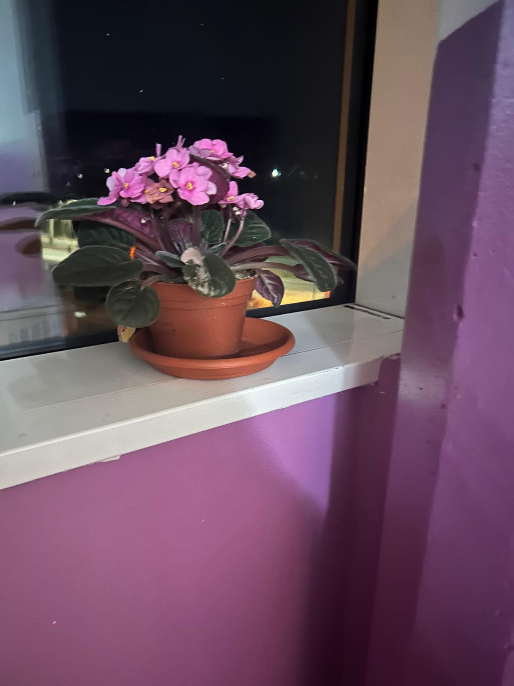
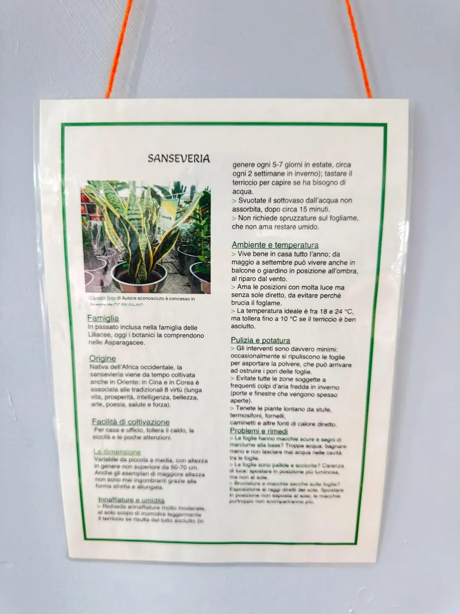
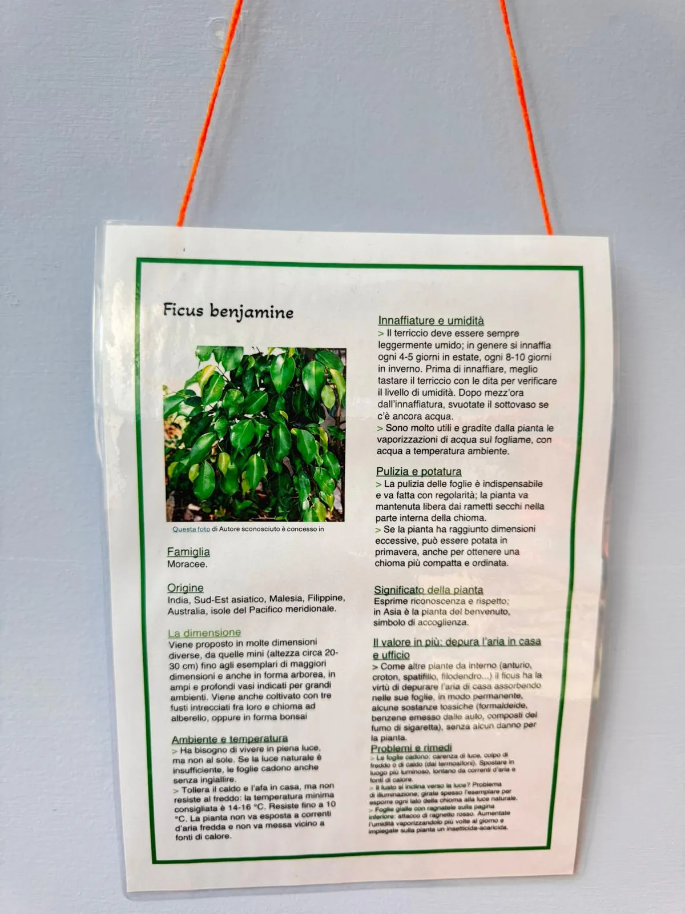

Attività e cultura
Verde LabIl verde che ci circonda, il futuro che costruiamo
Piante negli spazi comuni, affidate alle ragazze e ai ragazzi del Convitto: un laboratorio quotidiano di cura, creatività e rispetto per l'ambiente.
Le piante sono una risorsa preziosa
Le piante non sono semplici elementi decorativi: sono una risorsa preziosa, contribuiscono a rendere gli ambienti più accoglienti e piacevoli e ci insegnano il valore della cura e del rispetto per la natura.
Nel nostro Convitto, prendersi cura del verde significa anche imparare a rispettare l'ambiente attraverso comportamenti responsabili e scelte consapevoli.
Perché prendersi cura delle piante significa anche prendersi cura del pianeta.
Il verde, stanza per stanza
Vasi, cartellini e schede di cura: ecco come le piante hanno preso posto nella vita del Convitto.




Sei gesti che si tengono insieme
Coltivare una pianta, utilizzare con attenzione le risorse, differenziare i rifiuti e riciclare i materiali sono gesti strettamente collegati: tutti contribuiscono a ridurre gli sprechi e a preservare ciò che la natura ci offre.
- ColtivareSeguire una pianta giorno dopo giorno: acqua, luce e attenzione.
- Usare con attenzione le risorseMeno sprechi, più rispetto per ciò che la natura ci offre.
- Differenziare i rifiutiSeparare bene è già un modo di prendersi cura.
- Riciclare i materialiCiò che serve ancora non diventa scarto.
- Riutilizzare con creativitàDare nuova vita agli oggetti, realizzare soluzioni utili alla cura delle piante e rendere più belli e sostenibili gli spazi comuni.
- CollaborareLa sostenibilità si fa insieme: educa alla collaborazione, alla creatività e alla responsabilità ambientale.
Una pianta, un gruppo
Abbiamo collocato all'interno della struttura tanti vasi con diverse piante e assegnato ciascuna di esse a un piccolo gruppo di convittrici e convittori, perché se ne potessero curare.
Ogni pianta ha il suo cartellino con il nome e la sua scheda: da dove viene, quanta acqua e quanta luce vuole, come tenerla in salute. Toccare una scheda nella foto per leggerla da vicino.
- Sansevieria
- Ficus benjamin
- Pothos
- Kalanchoe
- Spatifillo
- Zamioculcas
- Violetta africana


Un seme di cambiamento
Ogni gesto sostenibile è un seme di cambiamento per il futuro!
Attraverso queste piccole ma significative esperienze, il Convitto diventa un luogo in cui la sostenibilità si traduce in azioni concrete, educando alla collaborazione, alla creatività e alla responsabilità ambientale.
Scopri la vita del ConvittoIl Verde Lab è curato dall'educatrice E. Giansanti.